Mathematical engineer, particularly interested in Crowdsourcing for Human Computation, Distributed Private Recommender Systems, Information Retrieval, Data Privacy, Distributed Systems, User Data Obfuscation in Web Systems, Societal and Economic Analysis of Online Work, Crowd Workers Unionisation, Algorithmic Bias. I was the project coordinator of the FashionBrain project.
| 2020 |
Fellowship of Higher Education
The University of Sheffield Higher Education Academy |
| 2015 |
Ph.D. in Mathematics
Hamilton Institute Design of decentralised algorithms applied to channel/code selection and convex optimisation for throughput fairness of 802.11 networks |
| 2010 |
M.Sc. in Mathematical Engineering
University of Roma "Tor Vergata" 110/110 with great distinction. Thesis on Monte Carlo Markov Chain methods for the approximate solutions of feature selection problems |
| 2009 |
Erasmus Scholarship
Universiteit Gent, Department of Telecommunications Queuing Behaviour of Statistical Multiplexer with Spacing |
| 2007 |
B.Sc. in Mathematical Engineering
University of Roma "Tor Vergata" 110/110 with great distinction. Thesis on Wavelet analysis for recognition of form document images with complicated background |
| 2017 - 2018 |
Information School, University of Sheffield, Dr. Gianluca Demartini Research Director of the H2020-funded project FashionBrain on Crowsourcing and recommender systems |
| 2016 |
Information School, University of Sheffield, Dr. Gianluca Demartini Research Associate on the EPSRC-funded project BetterCrowd on Crowsourcing and recommender systems |
| 2016 |
Science Foundation Ireland and Trinity College Dublin, Prof. Doug Leith Recipient of Technology Innovation Development Award (TIDA) 2016 on Privacy issues in recommender systems and probabilistic matrix factorisation |
| 2015 |
Statistics and Computer Science Department, Trinity College Dublin, Prof. Doug Leith Postdoctoral Researcher on Privacy issues in recommender systems and probabilistic matrix factorisation |
| 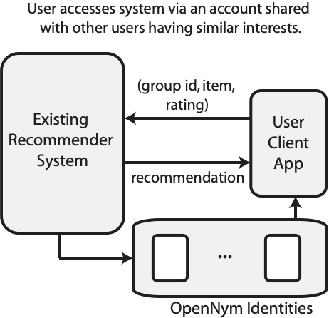 |
OpenNym: Privacy preserving recommending via pseudonymous group authentication A. Checco, L. Bracciale, D. Leith, and G. Bianchi Security and Privacy 2021 [1] |
| 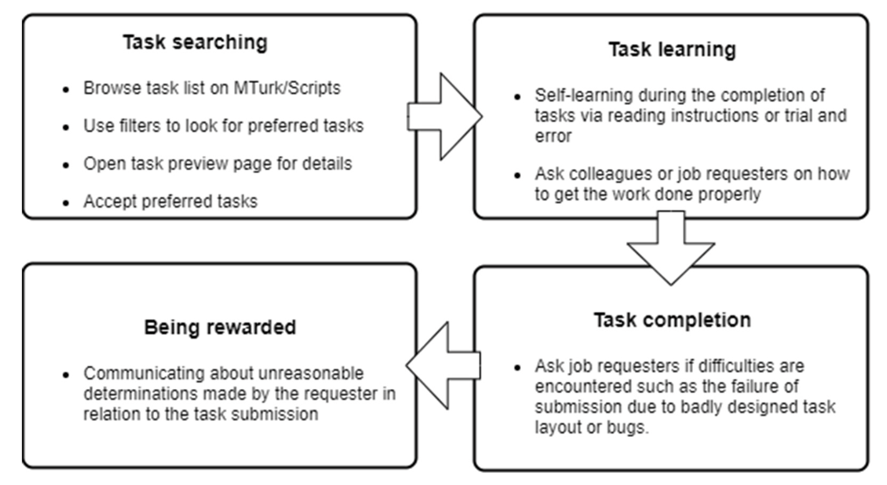 |
Design Principles and a Conceptual Framework for Crowd Teamwork Systems H. Xie, A. Checco, and E. Zamani 2021 [2] |
| 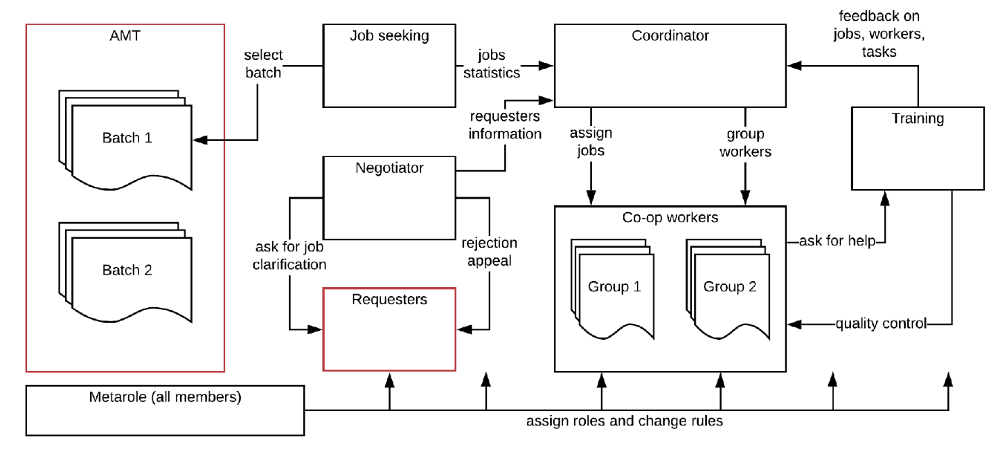 |
Worker perspectives on designs for a crowdwork co-operative J. Bates, A. Checco, and E. Gerakopoulou forthcoming [3] |
| 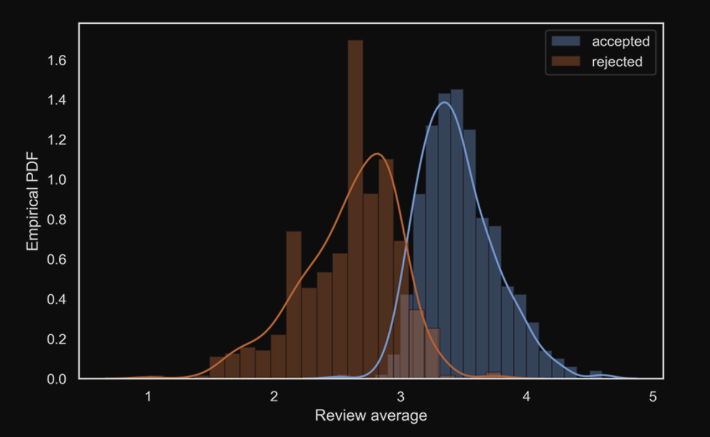 |
AI-assisted peer review A. Checco, L. Bracciale, P. Loreti, S. Pinfield, and G. Bianchi Humanities and Social Sciences Communications 2021 [4] [pdf] |
|
Smart Farming in sub-Saharan Africa: Challenges and Opportunities. P. Abbott, A. Checco, and D. Polese SENSORNETS 2021 [5] [pdf] |
|
| 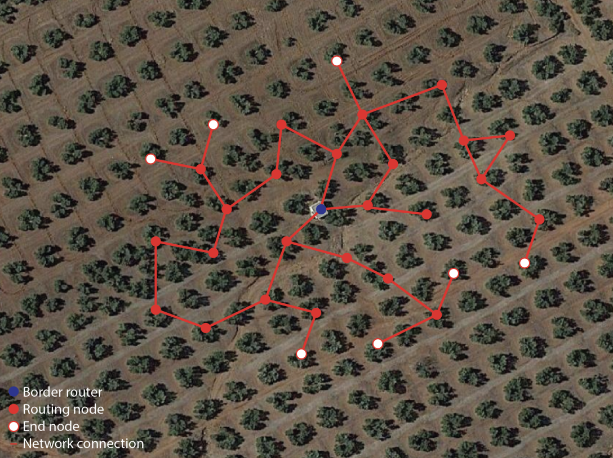 |
Internet of Trees: A Vision for Advanced Monitoring of Crops. A. Checco and D. Polese SENSORNETS 2020 [6] [pdf] |
| 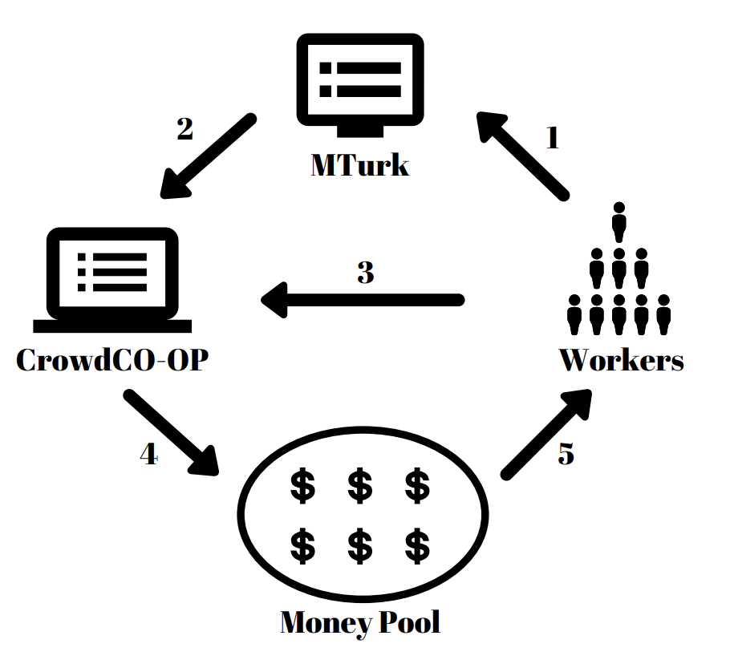 |
CrowdCO-OP: Sharing Risks and Rewards in Crowdsourcing S. Fan, U. Gadiraju, A. Checco, and G. Demartini Proceedings of the ACM on Human-Computer Interaction 2020 [7] [pdf] |
| 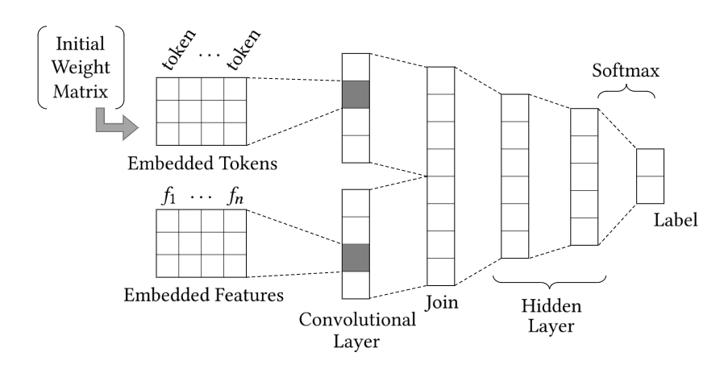 |
Modelling User Behavior Dynamics with Embeddings L. Han, A. Checco, D. Difallah, G. Demartini, and S. Sadiq Proceedings of the 29th ACM International Conference on Information & Knowledge Management 2020 [8] [pdf] |
| 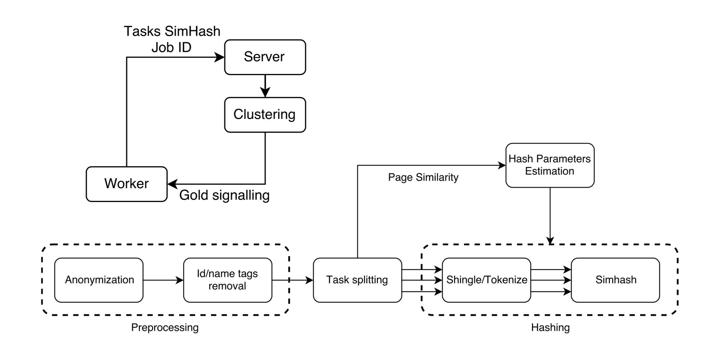 |
Adversarial Attacks on Crowdsourcing Quality Control A. Checco, J. Bates, and G. Demartini Journal of Artificial Intelligence Research 2020 [9] [pdf] |
| 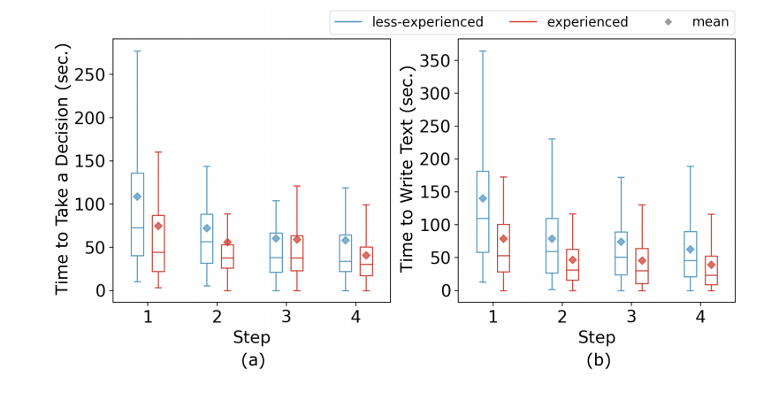 |
Crowd worker strategies in relevance judgment tasks L. Han, E. Maddalena, A. Checco, C. Sarasua, U. Gadiraju, K. Roitero, and G. Demartini Proceedings of the 13th International Conference on Web Search and Data Mining 2020 [10] [pdf] |
| 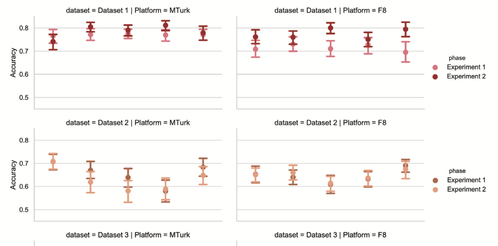 |
Platform-Related Factors in Repeatability and Reproducibility of Crowdsourcing Tasks R. Qarout, A. Checco, G. Demartini, and K. Bontcheva Proceedings of the AAAI Conference on Human Computation and Crowdsourcing 2019 [11] [pdf] |
| 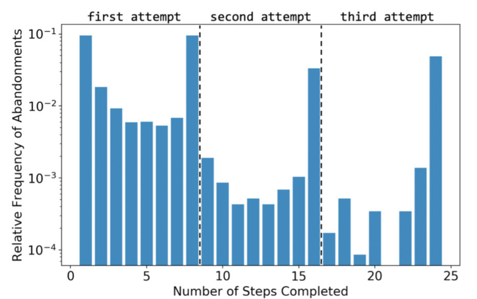 |
The impact of task abandonment in crowdsourcing L. Han, K. Roitero, U. Gadiraju, C. Sarasua, A. Checco, E. Maddalena, and G. Demartini IEEE Transactions on Knowledge and Data Engineering 2019 [12] [pdf] |
| 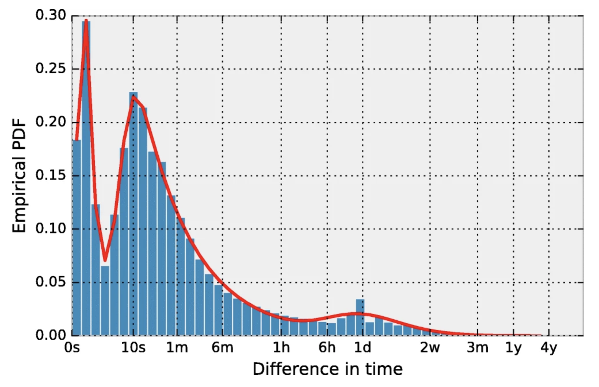 |
The evolution of power and standard Wikidata editors: comparing editing behavior over time to predict lifespan and volume of edits C. Sarasua, A. Checco, G. Demartini, D. Difallah, M. Feldman, and L. Pintscher Computer Supported Cooperative Work (CSCW) 2019 [13] [pdf] |
| 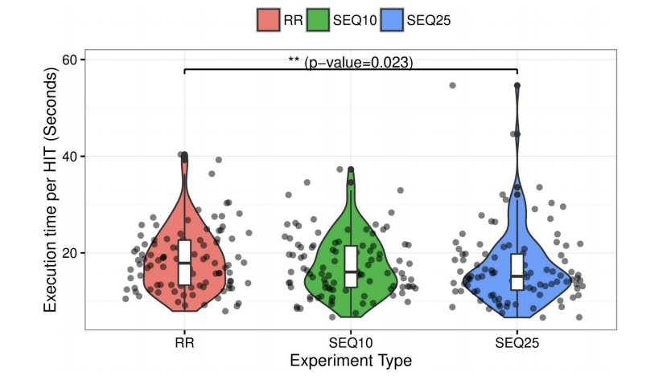 |
Deadline-Aware Fair Scheduling for Multi-Tenant Crowd-Powered Systems D. Difallah, A. Checco, G. Demartini, and P. Cudr\'e-Mauroux ACM Transactions on Social Computing 2019 [14] [pdf] |
|
Investigating User Perception of Gender Bias in Image Search: The Role of Sexism J. Otterbacher, A. Checco, G. Demartini, and P. Clough The 41st International ACM SIGIR Conference on Research & Development in Information Retrieval 2018 [15] [pdf] |
|
| 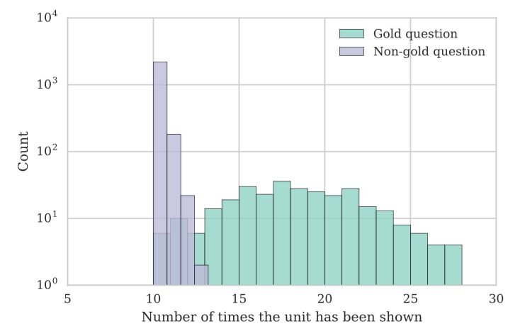 |
All That Glitters is Gold-An Attack Scheme on Gold Questions in Crowdsourcing (BEST PAPER AWARD) A. Checco, J. Bates, and G. Demartini Proceedings of the AAAI Conference on Human Computation and Crowdsourcing 2018 [16] [pdf] |
| 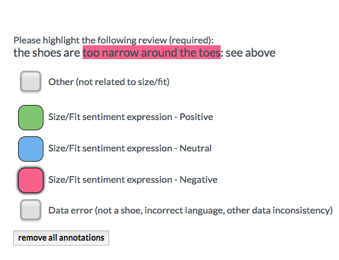 |
Crowd-Labeling Fashion Reviews with Quality Control I. Chernushenko, F. Gers, A. Loeser, and A. Checco arXiv preprint arXiv:1805.09648 2018 [17] |
| 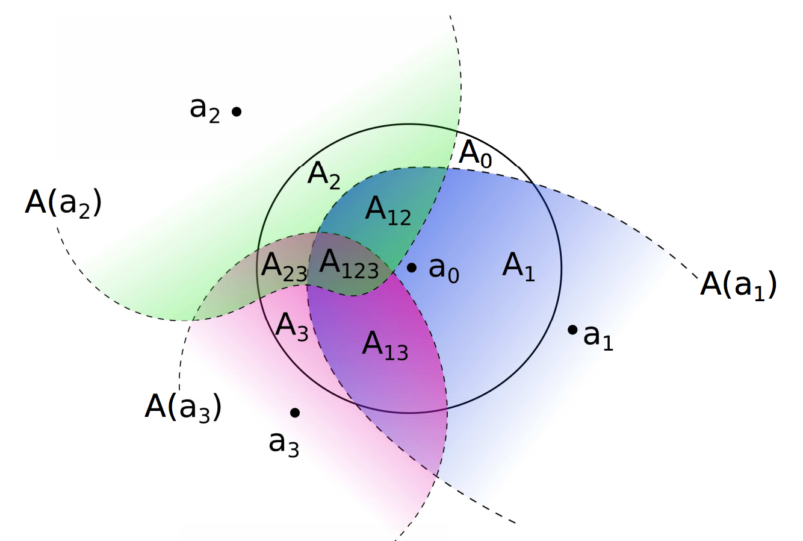 |
Updating Neighbour Cell List via Crowdsourced User Reports: A Framework for Measuring Time Performance A. Checco, C. Lancia, and D. Leith Wireless Communications and Mobile Computing 2018 [18] |
| 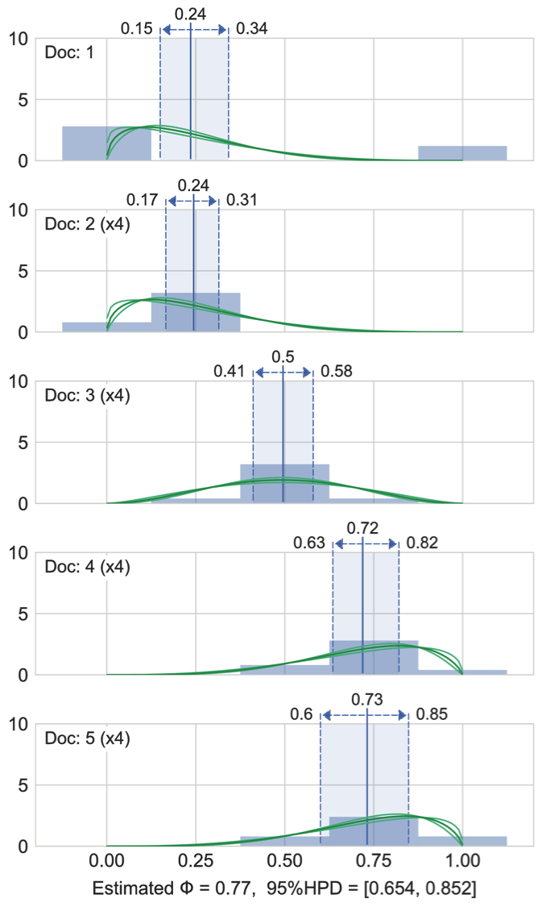 |
Let's agree to disagree: Fixing agreement measures for crowdsourcing A. Checco, A. Roitero, E. Maddalena, S. Mizzaro, and G. Demartini Proceedings of the Fifth AAAI Conference on Human Computation and Crowdsourcing (HCOMP-17) 2017 [19] |
 |
On the interactions between multiple overlapping WLANs using channel bonding B. Bellalta, A. Checco, A. Zocca, and J. Barcelo IEEE Transactions on Vehicular Technology 2016 [20] |
 |
Channel Bonding in Short-Range WLANs B. Bellalta, A. Faridi, J. Barcelo, A. Checco, and P. Chatzimisios European Wireless 2014 [21] [pdf] |
 |
Throughput Analysis in CSMA/CA Networks using Continuous Time Markov Networks: A Tutorial B. Bellalta, A. Zocca, C. Cano, A. Checco, J. Barcelo, and A. Vinel arXiv preprint arXiv:1404.0180 2014 [22] [pdf] |
| 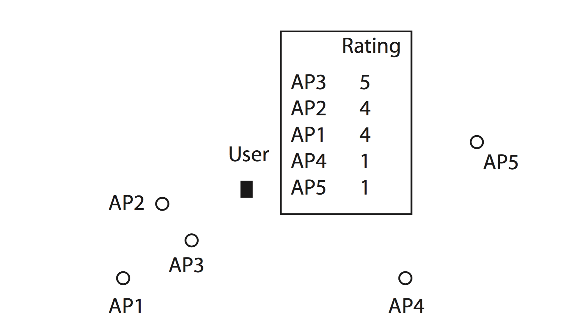 |
Recommending access points to individual mobile users via automatic group learning B. Partov, D. Leith, and A. Checco Communications (ICC), 2017 IEEE International Conference on 2017 [23] |
 |
BLC: Private Matrix Factorization Recommenders via Automatic Group Learning A. Checco, G. Bianchi, and D. Leith ACM Transactions on Privacy and Security (TOPS) 2017 [24] [pdf] |
| 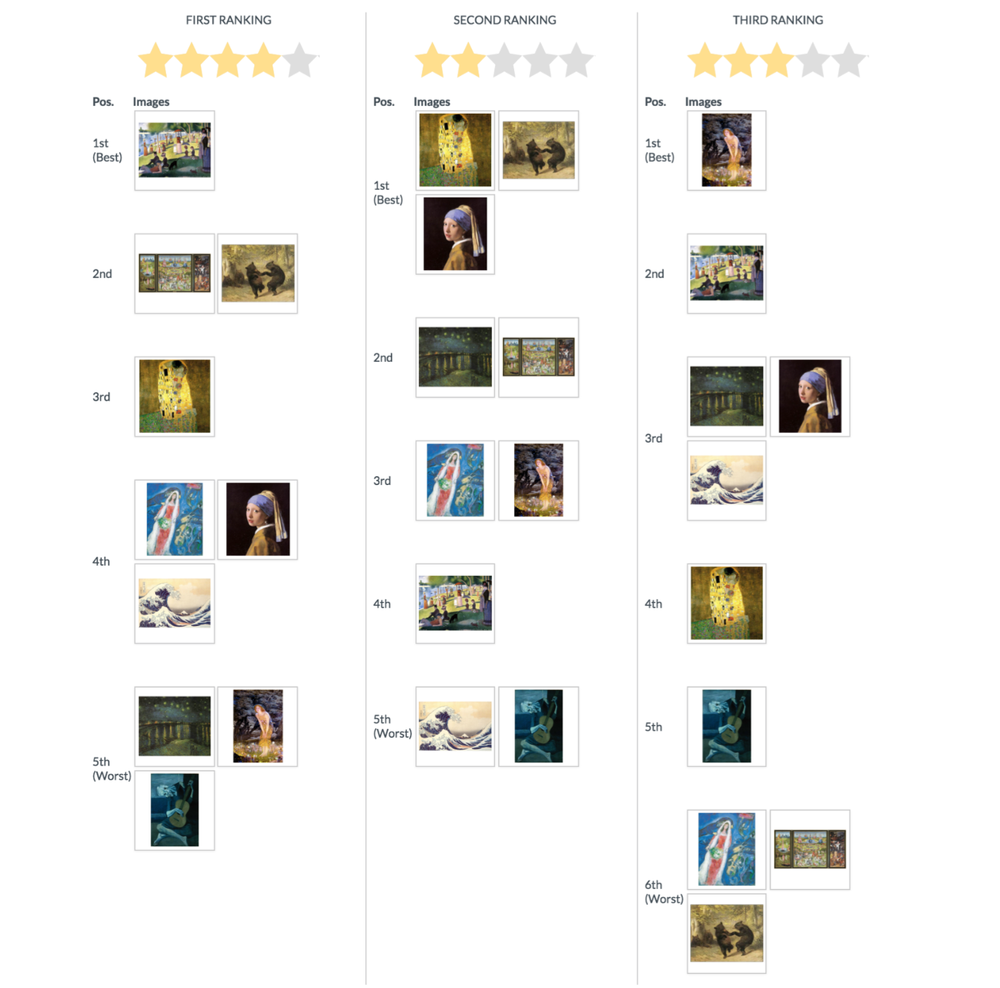 |
Pairwise, Magnitude, or Stars: What's the Best Way for Crowds to Rate? A. Checco and G. Demartini arXiv preprint arXiv:1609.00683 2016 [25] [pdf] |
| 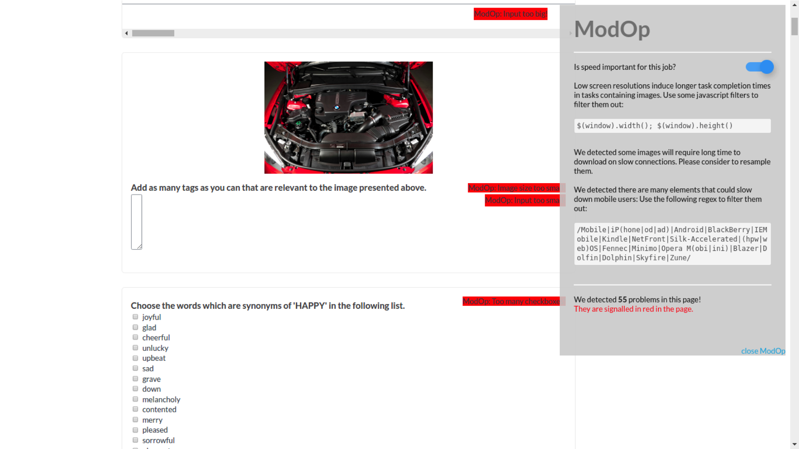 |
Modus operandi of crowd workers: The invisible role of microtask work environments U. Gadiraju, A. Checco, N. Gupta, and G. Demartini Proceedings of the ACM on Interactive, Mobile, Wearable and Ubiquitous Technologies 2017 [26] |
 |
Fast, Responsive Decentralized Graph Coloring A. Checco and D. Leith IEEE/ACM Transactions on Networking 2017 [27] [pdf] |
 |
Learning-Based Constraint Satisfaction With Sensing Restrictions A. Checco and D. Leith IEEE Journal of Selected Topics in Signal Processing 2013 [28] [pdf] |
 |
Fair Virtualisation of 802.11 Networks A. Checco and D. Leith IEEE/ACM Transactions on Networking 2013 [29] [pdf] |
 |
Proportional Fairness in 802.11 Wireless LANs A. Checco and D. Leith IEEE Communications Letters 2011 [30] [pdf] |
 |
Self-configuration of Scrambling codes for WCDMA Small Cell Networks A. Checco, R. Razavi, D. Leith, and H. Claussen IEEE 23rd International Symposium on Personal Indoor and Mobile Radio Communications (PIMRC) 2012 [31] [pdf] |
| 2011 - 2012 | Bell Laboratories Ireland, Intern |
|
| Languages |
Bash, C, C++, CSS, Matlab, JavaScript, Fortran, HTML, LaTeX, Mathematica, Python, R |
| Frameworks |
Spark, Cloudera, Pandas, NumPy, SciPy, SimPy, scikit-learn, keras, pymc3 |
| Algorithm design |
Design, convergence rate and complexity analysis of decentralised algorithms on graphs |
| Convex optimisation |
Convex optimisation, with application to discrete problems. Numerical methods for approximate solution of optimisation problems |
| Data Mining |
Monte Carlo Markov chains techniques for data mining and feature selection |
| Privacy in recommender systems |
Probabilistic matrix factorisation applied to recommender systems, with focus on privacy issues |
| Simulators |
Event-based simulators design for wireless network analysis |
| Statistical inference |
Bayesian modelling and exploratory data analysis, with focus on big data |
| LSE: Can AI be used ethically to assist peer review? | May 17, 2021 |
| FashionBrain - Understanding Europe's Fashion Data Universe | January 27, 2020 |
| Pyspark Intro | March 21, 2017 |
| Modus Operandi of Crowd Workers: The Invisible Role of Microtask Work Environments | March 20, 2017 |
| How to Best Serve Micro-tasks to the Crowd when there Is Class Imbalance | March 19, 2017 |
Last updated on 2022-02-27
 Alessandro Checco
Alessandro Checco